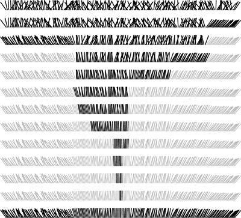

C++ Programming Robert Sedgewick - Princeton University Addison Wesley Professional Algorithms in C++, Parts 1–4: Fundamentals, Data Structure, Sorting, Searching, Third Edition
7.8. Selection
An important application related to sorting but for which a full sort is not required is the operation of finding the median of a set of numbers. This operation is a common computation in statistics and in various other data-processing applications. One way to proceed would be to sort the numbers and to look at the middle one, but we can do better, using the quicksort partitioning process.
The operation of finding the median is a special case of the operation of selection: finding the kth smallest of a set of numbers. Because an algorithm cannot guarantee that a particular item is the kth smallest without having examined and identified the k - 1 elements that are smaller and the N - k elements that are larger, most selection algorithms can return all the k smallest elements of a file without a great deal of extra calculation.
Selection has many applications in the processing of experimental and other data. The use of the median and other order statistics to divide a file into smaller groups is common. Often, only a small part of a large file is to be saved for further processing; in such cases, a program that can select, say, the top 10 percent of the elements of the file might be more appropriate than a full sort. Another important example is the use of partitioning about the median as a first step in many divide-and-conquer algorithms.
Program 7.6. Selection|
This procedure partitions an array about the (k-l)th smallest element (the one in a[k]): It rearranges the array to leave a[l], ..., a[k-1] less than or equal to a[k], and a[k+1], ..., a[r] greater than or equal to a[k].
For example, we could call select(a, 0, N-1, N/2) to partition the array on the median value, leaving the median in a[N/2].
template <class Item>
void select(Item a[], int l, int r, int k)
{
if (r <= l) return;
int i = partition(a, l, r);
if (i > k) select(a, l, i-1, k);
if (i < k) select(a, i+1, r, k);
}
|
We have already seen an algorithm that we can adapt directly to selection. If k is extremely small, then selection sort (see Chapter 6) will work well, requiring time proportional to Nk: first find the smallest element, then find the second smallest by finding the smallest of the remaining items, and so forth. For slightly larger k, we shall see methods in Chapter 9 that we could adapt to run in time proportional to N log k.
A selection method that runs in linear time on the average for all values of k follows directly from the partitioning procedure used in quicksort. Recall that quicksort's partitioning method rearranges an array a[l], ..., a[r] and returns an integer i such that a[l] through a[i-1] are less than or equal to a[i], and a[i+1] through a[r] are greater than or equal to a[i]. If k is equal to i, then we are done. Otherwise, if k < i, then we need to continue working in the left subfile; if k > i, then we need to continue working in the right subfile. This approach leads immediately to the recursive program for selection that is Program 7.6. An example of this procedure in operation on a small file is given in Figure 7.13.
For the keys in our sorting example, partitioning-based selection uses only three recursive calls to find the median. On the first call, we seek the eighth smallest in a file of size 15, and partioning gives the fourth smallest (the E); so on the second call, we seek the fourth smallest in a file of size 11, and partitioning gives the eighth smallest (the R); so on the third call, we seek the fourth smallest in a file of size 7, and find it (the M). The file is rearranged such that the median is in place, with smaller elements to the left and larger elements to the right (equal elements could be on either side), but it is not fully sorted.
Program 7.7. Nonrecursive selection|
A nonrecursive implementation of selection simply does a partition, then moves the left pointer in if the partition fell to the left of the position sought, or moves the right pointer in if the partition fell to the right of the position sought.
template <class Item>
void select(Item a[], int l, int r, int k)
{
while (r > l)
{ int i = partition(a, l, r);
if (i >= k) r = i-1;
if (i <= k) l = i+1;
}
}
|
Program 7.7 is a nonrecursive version that follows directly from the recursive version in Program 7.6. Since that program always ends with a single call on itself, we simply reset the parameters and go back to the beginning. That is, we remove the recursion without needing a stack, also eliminating the calculations involving k by keeping k as an array index.
Property 7.4. Quicksort-based selection is linear time on the average|
As we did for quicksort, we can argue (roughly) that, on an extremely large file, each partition should roughly split the array in half, so the whole process should require about N + N/2 + N/4 + N/8 + ... = 2N comparisons. And, as it was for quicksort, this rough argument is not far from the truth. An analysis similar to, but significantly more complex than, that given in Section 7.2 for quicksort (see reference section) leads to the result that the average number of comparisons is about
2N + 2k ln(N/k) + 2(N - k) ln(N/(N - k)),
which is linear for any allowed value of k. For k = N/2, this formula evaluates to give the result that about (2 + 2ln 2)N comparisons are required to find the median.
|
An example showing how this method finds the median in a large file is depicted in Figure 7.14. There is only one subfile, which is cut down in size by a constant factor on each call, so the procedure finishes in O(log N) steps. We can speed up the program with sampling, but we need to exercise care in doing so (see Exercise 7.45).
The selection process involves partitioning the subfile that contains the element sought, moving the left pointer to the right or the right pointer to the left depending on where the partition falls.

The worst case is about the same as for quicksort—using this method to find the smallest element in a file that is already in sorted order would result in a quadratic running time. It is possible to modify this quicksort-based selection procedure such that its running time is guaranteed to be linear. These modifications, although theoretically important, are extremely complex and are not at all practical.
Exercises | 7.41 About how many comparisons are required, on the average, to find the smallest of N elements using select? | | 7.42 About how many comparisons are required, on the average, to find the αN th smallest element using select, for α = 0.1, 0.2, ..., 0.9? | | 7.43 How many comparisions are required in the worst case to find the median of N elements using select? | | | |  7.44 Write an efficient program to rearrange a file such that all the elements with keys equal to the median are in place, with smaller elements to the left and larger elements to the right. 7.44 Write an efficient program to rearrange a file such that all the elements with keys equal to the median are in place, with smaller elements to the left and larger elements to the right.
| |  7.45 Investigate the idea of using sampling to improve selection. Hint: Using the median may not always be helpful. 7.45 Investigate the idea of using sampling to improve selection. Hint: Using the median may not always be helpful.
| |  7.46 Implement a selection algorithm based on three-way partitioning for large random files with keys having t distinct values for t = 2, 5, and 10. 7.46 Implement a selection algorithm based on three-way partitioning for large random files with keys having t distinct values for t = 2, 5, and 10.
|
|